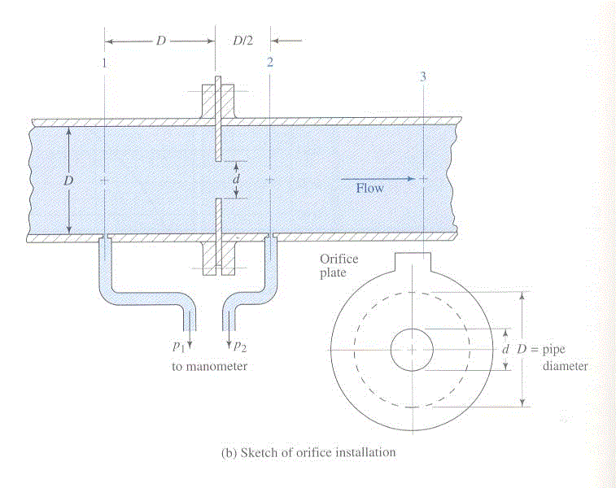
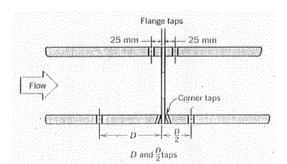
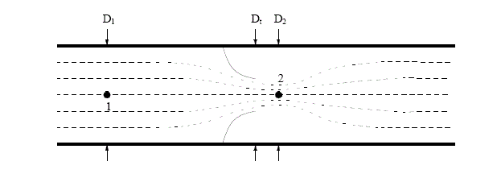
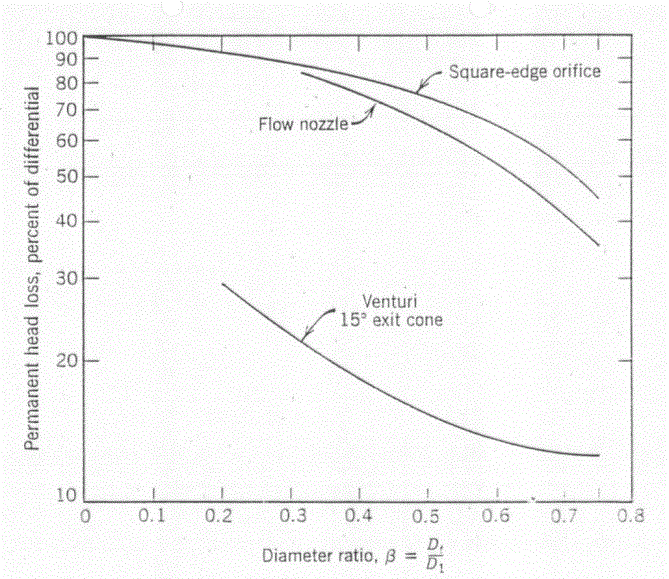
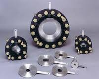
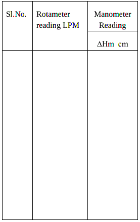
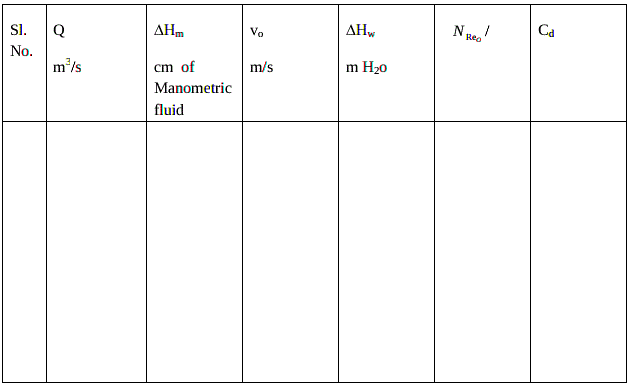
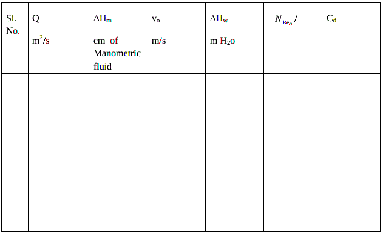

Experiment No.3:
Flow through orifice meter
Background and Theory
Flow meters are used in the industry to measure the volumetric flow rate of fluids.
Differential pressure type flow meters (Head flow meters) measure flow rate by
introducing a constriction in the flow. The pressure difference caused by the
constriction is correlated to the flow rate using Bernoulli’s theorem.
If a constriction is placed in a pipe carrying a stream of fuid, there will be an
increase in velocity, and hence an increase in kinetic energy ,at the point of
constriction. From an energy balance as given by Bernoulli’s theorem, there must
be a corresponding reduction in pressure. Rate of discharge from the constriction
can be calculated by knowing this pressure reduction, the area available for flow at
the constriction ,the density of the fluid and the coefficient of discharge Cd.
Coefficient of discharge is the ratio of actual flow to the theoretical flow and
makes allowances for stream contraction and frictional effects. Venturi meter,
orifice meter, and Pitot tube are widely used head flow meters in the industry. The
Pitot-static is often used for measuring the local velocity in pipes or ducts. For
measuring flow in enclosed ducts or channels, the Venturi meter and orifice meters
are more convenient and more frequently used. The Venturi is widely used
particularly for large volume liquid and gas flows since it exhibits little pressure
loss. However, for smaller pipes orifice meter is a suitable choice. In order to use
any of these devices for measurement it is necessary to empirically calibrate them.
That is, pass a known volume through the meter and note the reading in order to
provide a standard for measuring other quantities.
Orificemeter
An orifice meter is a differential pressure flow meter which reduces the flow area
using an orifice plate.
An orifice is a flat plate with a centrally drilled hole machined to a sharp edge. The
orifice plate is inserted between two flanges perpendicularly to the flow, so that the
flow passes through the hole with the sharp edge of the orifice pointing to the
upstream. The relationship between flow rate and pressure drop can be determined
using Bernoulli’s equation as:
.gif) (1)
(1)
where, Q is the volumetric flow rate, Ao is the orifice cross sectional area, p
1 and
p
2 are the pressure measured at the upstream and downstream and C
d is the
discharge coefficient for the orifice .
.gif) is the ratio of orifice diameter to the pipe diameter=
is the ratio of orifice diameter to the pipe diameter=.gif)
is the diameter
of the orifice and d
p
is the pipe diameter.
The fluid contracts and then expands as it moves through the orifice and this
results in a pressure drop across the orifice, which can be measured. The
magnitude of the pressure drop can be related to the volumetric flow rate.
An orifice in a pipeline is shown in figure 1 with a manometer for measuring the
drop in pressure (differential) as the fluid passes through the orifice. The
minimum cross sectional area of the jet is known as the “vena contracta.”

How does it work?
As the fluid flows thtough the orifice plate the velocity increases, at the expense of pressure head. The pressure drops suddenly as the orifice is passed. It continues to drop until the ”vena contracta“ is reached and then gradually increases until at approximately 5 to 8 diameters downstream a maximum pressure point is reached that will be lower than the pressure upstream of the orifice. The decrease in pressure as the fluid passes thru the orifice is a result of the increased velocity of the fluid passing through the reduced area of the orifice. When the velocity decreases as the fluid leaves the orifice the pressure increases and tends to return to its original level. All of the pressure loss is not recovered because of friction and turbulence losses in the stream. The pressure drop across the orifice increases when the rate of flow increases. When there is no flow there is no differential. The differential pressure is proportional to the square of the velocity, it therefore follows that if all other factors remain constant, then the differential pressure is
proportional to the square of the rate of flow.
Following types of pressure taps can be located for differential pressure
measurement:
Corner: pressure taps one each on the upstream and downstream flanges.
Radius taps:One pipe diameter upstream side and one and a half pipe diameter on
the downstream side.
Pipe taps: Upstream side- 2.5pipe diameters and downstream side- 8 pipe
diameters.
Flange taps: 1” upstream side and 1” downstream side.

The analysis of the flow through a restriction (Figure 2) begins with assuming
straight, parallel
stream lines at cross sections 1 and 2, and the absence of energy losses along the
streamline from point 1 to point 2.

The objective is to measure the mass flow rate(m) By continuity
.gif)
Bernoulli’s equation may now be applied to a streamline down the centre of the
pipe from a point 1 well upstream of the restriction to point 2 in the vena contracta
of the jet immediately
downstream of the restriction where the streamlines are parallel and the pressure
across the duct may therefore be taken to be uniform:
.gif)
assuming that the duct is horizontal. Combining (3) with (2) gives
.gif)
For a real flow through a restriction, the assumptions above do not hold
completely. Further, we
cannot easily measure the cross-sectional area of the jet at the vena contracta at
cross-section 2 where the streamlines are parallel. These errors in the idealised
analysis are accounted for by
introducing a single, cover all correction factor, the discharge coefficient, C
d, such
that
.gif)
Coefficient of discharge for a given orifice type is a function of the Reynolds
number (N
Reo) based on orifice diameter and velocity,and diameter ratio
. At
Reynolds number greater than about 30000,the coefficients are substantially
constant and independent of
.For square edged or sharp edged concentric circular
orifices, the value will fall between 0.595 and 0.62 for vena contracta or radius taps
for
upto 0.8 and for flange taps for
upto 0.5

Coefficient of discharge for square edged circular orifices with corner taps[Tuve
and Sprenle Instruments(1933)]
In summary, the principal advantages of the orifice plate are
- it is simple and robust
- standards are well established and comprehensive
- plates are cheap
- may be used on gases, liquids and wet mixtures (eg steam)
Its principal drawbacks are
- low dynamic range: maximum to minimum mass flow rates only 4:1 at best
- performance changes with plate damage or build up of dirt.
- affected by upstream swirl
- large head loss. Because of the large friction losses from the eddies generated by
the reexpanding jet below the vena contracta ,the pressure recovery in an
orificemeter is poor.For a value of equal to 0.5, the lost head is about 73% of the
orifice differential.

Comparison of permanent head loss caused by different head meters
Orifice plates and flanges

Procedure
FLOW THROUGH ORIFICE METER
Aim of the Experiment:
To calibrate orificemeter with different
* ratios. Determine the flow head relationship for this
flow meter and determine the effect of Reynolds number on the coefficient of discharge (C
d)
with different
ratios.
*
is the ratio of orifice diameter to pipe diameter
Apparatus required: CCL
4 manometer, H
g manometer
Procedure:
- Keep the bypass valve completely open and the main valve completely closed. Switch on
the pump.
- Connect a CCL4 manometer across the orifice.
- Open the main valve and set a flow rate of water using the Rotameter.
- Note down the Rotameter reading and manometer reading after a steady state is attained.
- Increase the flow rate by opening the main valve and throttling the bypass valve suitably
and repeat step 4.
- Use mercury manometer for higher flow rates.
- Take readings withCCL4 manometer as well as with Hg manometer.
- Repeat the experiment with different ratios and with different fluids.
Data:
Diameter of the pipe = d = cm
Diameter of the orifice = d
0= cm
Density of CCl4 =
.gif) CCL4
CCL4 = kg/m
3
Density of Hg =
Hg = kg/m
3
Density of fluid =
= kg/m
3
Viscosity of fluid=
.gif)
= kg/m
3 = cp
Observations:
Hg = kg/m3
-->
Calculations :
Flow rate:
∆Hm = cm of manometric fluid.
Volumetric flow rate = Q = m
3/s
.gif)
= m of H
2o
.gif)
=density of manometric fluid.
Average velocity through the orifice =
.gif)
= m/s
A
0 = cross sectional areaof orifice =
.gif)
Reynolds Number at the orifice =
.gif)
=
.gif)
=
Coefficient of discharge = Cd =
.gif) 

Plot Q vs
.gif)
and Q vs
.gif)
on ordinary graph(calibration).
Plot C
d vs N
Reo on a semilog graph sheet (with N
Reoon log scale).
Plot log Q vs log
.gif)
.Find the slope and the intercept. Find the coefficient and power of
. Comment on the nonlinear flow head relationship. Obtain C
d from the plot.
Results:
- Report on calibration
- Comment on Cd vs NReo
- Report the Cd
- Comment on flow head relationship
Assignment
Assignment
1. Derive the flow equation for the orifice meter from first principles.
2. What are the different types of orifice plates? Indicate the suitable application of
each of the type.
3. An orifice meter is to be installed in a 12-in ductile iron pipe carrying water at
15.5 degree C. A mercury manometer is to be used to measure the pressure
difference across the orifice when the expected range of the flow rate is from
5700 lit/min to 15500 lit/min. The manometer scale ranges from 0 to 30.5 cm of
mercury. Determine the appropriate diameter of the orifice.
Reference
- Warren Lee McCabe, Julian Cleveland Smith, Peter Harriott ,Unit operation of chemical engineering , 5th Edition,1993
- Coulson and Richardson,Chemical Engineering Volume I ELBS,Pargamon 3rd edition.1977
- Walter L. Badger and Julius T. Banchero, Introduction to Chemical engineering.. Tata McGraw-Hill book Edition 1997,India
- Perry's Chemical Engineers' Handbook (7th Edition) Edited by Perry, R.H.; Green, D.W. © 1997 McGraw-Hill
- A. S. Foust, Principles of Unit Operations, 2nd ed. John Wiley and Sons, Inc., 1980
- Industrial Instrumentation by Donald P Eckman, Wiley Eastern Publication
- Lecture notes by M.Subramanian http://www.msubbu.in/ln/fm/
Contributors List
Faculties
- Prof. Vidya Shetty K, Department of Chemical Engineering, NITK
- Dr. K V Gangadharan | NITK
- Dr. Pruthviraj U | NITK
Contributors
- Karthik | Department of Chemical Engineering, NITK
- Amogha V Somayaji | Department of Chemical Engineering, NITK
- Haneena | NITK
- Jaison DSouza B | NITK
- Erin Sheryl Pereira | NITK
- Anusha B Salian | NITK
- Akshaya | NITK